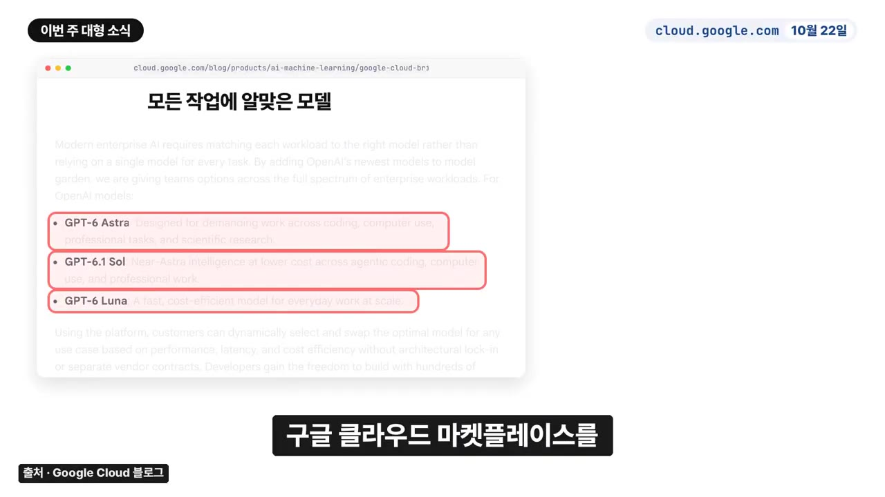
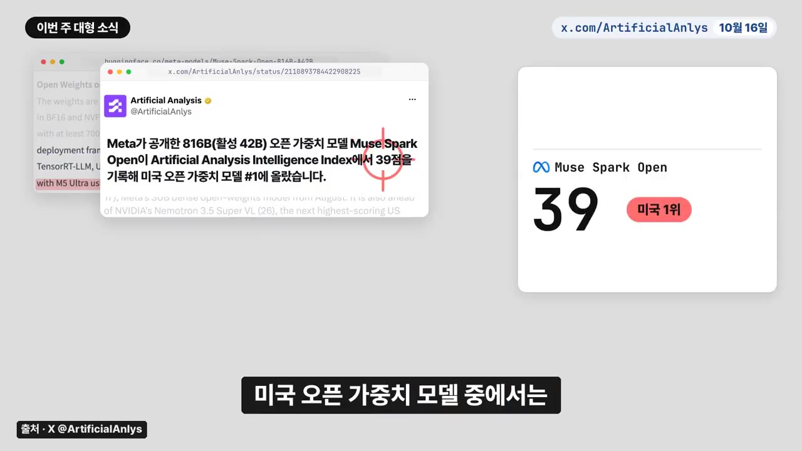
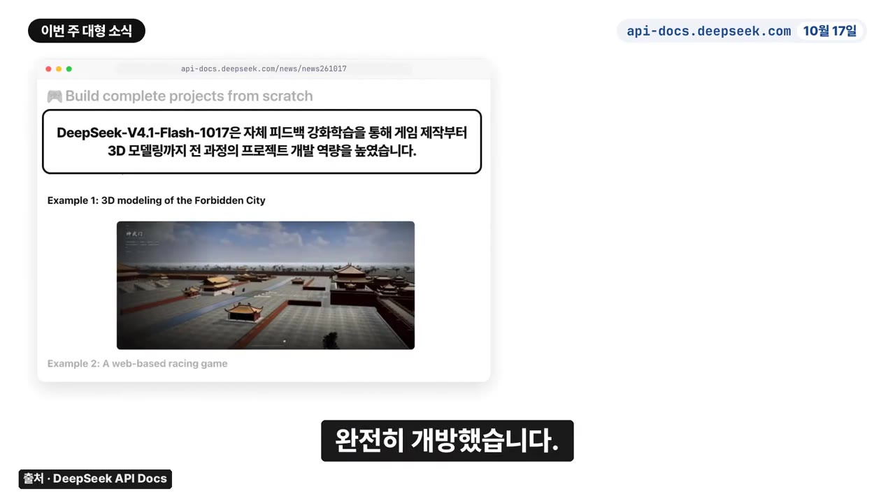
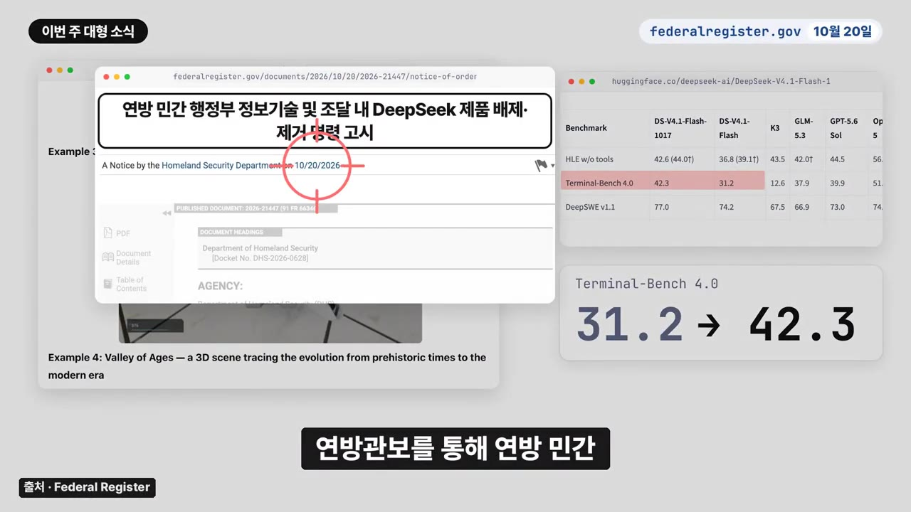
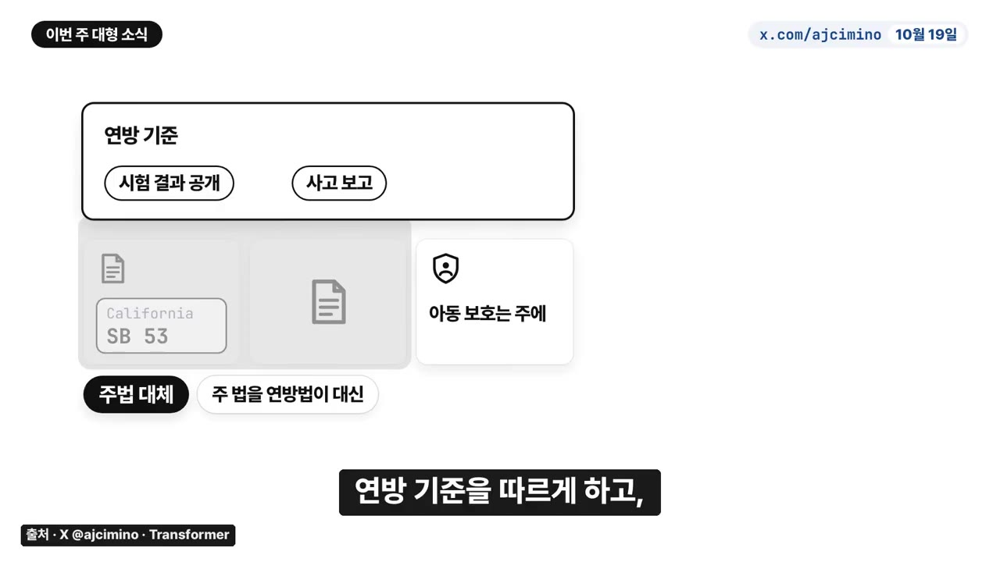
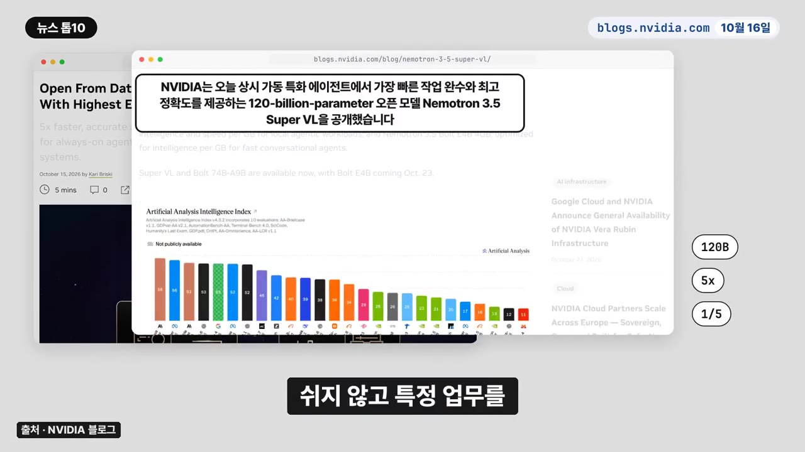
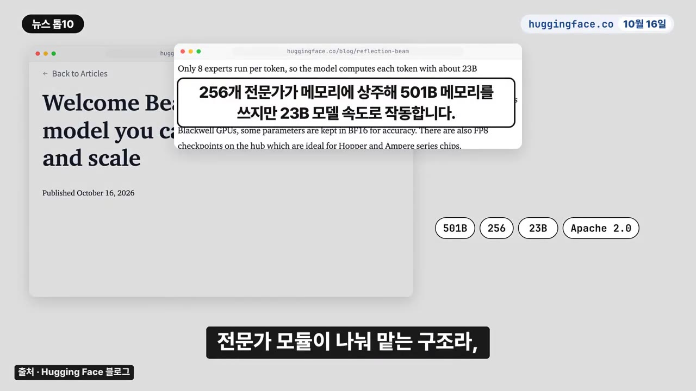
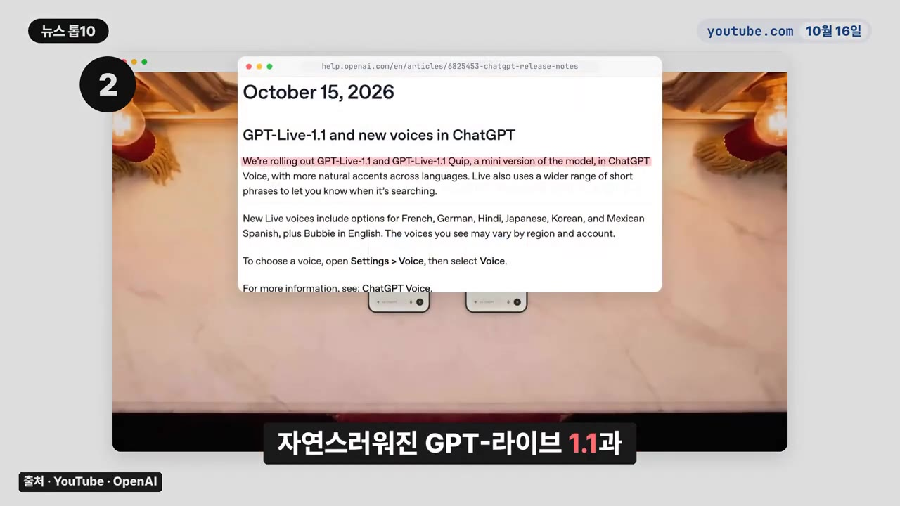

한 주를 정리해주는 AI뉴스 - Fable 5.5 흔적, Muse Spark Open 열풍, OpenAI 구글 클라우드 등 AI news TOP 10, 깃허브 트렌딩 TOP 5
▶ 원본 영상 보기한눈에 보기
- OpenAI가 Google Cloud와 손잡고 GPT-6 아스트라·GPT-6.1 솔·GPT-6 루나 3종을 구글 클라우드 모델 가든에 넣습니다. 다만 Microsoft가 여전히 주 클라우드 파트너라고 따로 밝혔습니다.
- Meta의 오픈 가중치 모델 뮤즈 스파크 오픈(매개변수 8,160억 개)은 M5 울트라 맥 스튜디오 2대로 책상 위에서 돌릴 수 있습니다. 미국 오픈 가중치 모델 중 1위(39점)지만 중국 모델(GLM 5.3 45점, 키미 K3 44점)보다는 낮습니다.
- 딥시크는 V4.1 플래시 1017로 코딩 성능을 크게 올렸고(터미널 벤치 31.2→42.3점), 웹 검색 기능을 10월 31일까지 무료로 열었습니다. 같은 주 미국 정부는 연방 민간 기관에서 딥시크 제품을 퇴출하라고 명령했습니다.
- 앤트로픽이 의회에 연방 AI 안전 법안 초안을 제안했는데, 주법을 대체하는 조항과 너무 높은 모델 차단 기준 때문에 비판을 받았고 회사는 문구를 고치겠다고 했습니다.
- 그 밖에 미공개 GPT-6.1 테라 포착, 앤트로픽 지분 5%의 공익펀드 이전, 마인크래프트를 깬 제미나이 4 아르곤 에이전트가 화제였고, 깃허브에서는 레아(누적 별 36만 개)가 2주 연속 1위였습니다.
이런 분께 도움이 됩니다
- 한 주의 AI 업계 흐름(빅테크 협력, 오픈 모델, 규제)을 10분 안에 따라잡고 싶은 직장인
- 회사에서 클라우드·AI 도구 도입이나 비용 관리를 맡은 분
- 쓸 만한 깃허브 AI 도구를 찾는 개발자
핵심 내용
OpenAI 최신 모델이 구글 클라우드에 들어간다 (0:20)
OpenAI와 Google이 10월 22일 블로그로 동시에 발표했습니다. 이제 구글 클라우드 안에서 OpenAI 모델과 Codex 에이전트 기능을 바로 불러 쓸 수 있습니다.
- 모델 가든(Model Garden): 구글 클라우드에서 여러 회사의 AI 모델을 모아 골라 쓰는 공간. 지금은 일부 기업 고객에게만 먼저 여는 비공개 프리뷰이고, 정식 출시는 "몇 주 안"입니다.
- 들어가는 모델: GPT-6 아스트라, GPT-6.1 솔, GPT-6 루나 3종

- 결제: 구글 클라우드 마켓플레이스에서 바로 구매할 수 있고, 구글 청구서 1장으로 묶어 내며, 기존 클라우드 약정 금액에서 차감됩니다.
- 10월 22일부터: Codex CLI와 데스크톱 앱을 구글 제미나이 플랫폼에 직접 연결해 구글 서버에서 모델을 돌릴 수 있습니다.
- 예정: 구글 Antigravity와 제미나이 에이전트에서도 OpenAI 모델을 고를 수 있게 됩니다.
- 발표문 끝에는 "Microsoft가 여전히 주 클라우드 파트너"라는 문장이 따로 들어갔습니다.
구글 클라우드를 쓰는 회사는 데이터 권한·보안 관리를 그대로 두고 작업마다 구글과 OpenAI 모델 중 품질이나 비용이 나은 쪽을 고를 수 있습니다.
💡 (진행자 해석) OpenAI는 구글 약정에 묶인 기업까지 고객으로 데려오고, 구글은 기존 고객을 지키려고 경쟁사 모델을 받아들인 셈입니다.
Meta '뮤즈 스파크 오픈' — 책상 위의 초대형 모델 (2:19)
- 오픈 가중치: 학습을 마친 모델 파일을 공개해 누구나 내려받아 돌리게 한 방식입니다. 완전한 오픈소스는 아니고 별도의 '뮤즈 모델 라이선스'를 따릅니다.
- 규모: 전체 매개변수 8,160억 개, 실제로 작동할 때는 420억 개만 씁니다.
- 입력: 글·이미지·영상·음성을 모두 받고, 한 번에 100만 토큰까지 처리합니다.
- 돌리는 법: Apple MLX 프레임워크에 최적화돼 M5 울트라 맥 스튜디오 2대(대당 통합 메모리 최대 512GB)를 묶으면 모델 전체를 메모리에 올려 돌릴 수 있습니다.
- 받는 곳: Hugging Face 등 주요 클라우드
- 시연: 컴퓨터 안에서만 돌려 오픈소스 앱의 버그를 고치고 새 기능을 넣어 빌드했고, DaVinci Resolve를 조작해 영상에서 좋은 장면을 찾아 세로로 잘랐습니다.
| Artificial Analysis 지능 지수 | 점수 |
|---|---|
| GLM 5.3 (중국) | 45 |
| 키미 K3 (중국) | 44 |
| 뮤즈 스파크 오픈 (미국 오픈 가중치 1위) | 39 |
| 그다음 미국 오픈 가중치 모델 | 26 |

💡 (진행자 해석) 점수로는 중국 모델이 아직 앞서므로, Meta는 '개인 장비에서 큰 에이전트를 돌리는 흐름'을 먼저 잡으려는 것으로 보입니다.
딥시크 V4.1 플래시 1017 공개와 미국의 퇴출 명령 (4:20)
새 모델(10월 17일 공개, 웹·앱·API에 바로 적용)
- 회사 설명: 이전 버전보다 점수는 높고 작업 완료는 빠르며 답변은 더 짧습니다. 성능은 올리고 비용은 낮췄다고 합니다.
- 결과물을 스스로 점검하고 고치며 배우는 강화 학습을 거쳐 게임 제작·3D 모델링처럼 프로젝트 하나를 끝까지 완성하는 능력이 좋아졌습니다.
- 입력창(컨텍스트)은 100만 토큰이고, 누구나 가져다 고쳐 쓸 수 있게 모델을 공개했습니다.
- 공식 데모: 자금성 3D 모델링, Godot 엔진으로 만든 포털 2 게임, 선사 시대부터 현대까지의 변화를 담은 3D 장면

- 터미널 벤치(명령줄에서 코딩·시스템 작업을 하는 능력을 재는 시험): 31.2점에서 42.3점으로 올랐습니다.
웹 검색 무료 개방
- 하루 수억 건을 처리하는 자체 검색 엔진으로 웹 검색과 페이지 내용 가져오기를 모두에게 열었습니다.
- Claude Code나 Codex 같은 코딩 도구에서 딥시크 API를 쓰면 요금이 붙는 10월 31일 전까지 무료입니다.
미국의 퇴출 명령(10월 20일)
- 미국 국토안보부 장관이 연방 관보를 통해 연방 민간 기관 IT에서 딥시크 제품을 모두 빼라고 명령했습니다.

- 미국 FBI와 AI 기업들은 딥시크가 앞선 모델의 답변을 교재 삼아 학습하는 증류를 했다고 의심해 왔습니다. 중국은 이를 부인하며 단호히 대응하겠다고 경고했습니다.
- 딥시크가 화웨이와 칩을 개발한다는 외신 보도(소식통 인용)도 나왔습니다.
앤트로픽의 연방 AI 안전 법안 초안 논란 (6:28)
- 초안 제안
- 초안 존재 확인
- 비판 제기
- 대표 인정
- 문구 수정 약속
- 1초안 제안
앤트로픽이 의회에 연방 AI 안전 법안 초안을 조용히 제안했다는 외신 보도가 나왔습니다. (6:28)
- 2초안 존재 확인
연방 정책 책임자 Anthony Cimino가 개인 X 계정에서, 회사의 AI 안전 구상을 법안 문구로 옮겨 소수 의회 사무실과 공유했다고 확인했습니다.
- 3비판 제기
주법 대체 조항과 너무 높은 차단 기준이 쟁점이 됐습니다.
- 4대표 인정
Dario Amodei는 회사가 감수한 비용 큰 안전 결정 9가지를 들면서, 이번 초안 공유를 포함한 3가지는 더 잘할 수 있었다고 인정했습니다.
- 5문구 수정 약속
Cimino가 주요 비판 4가지를 짚고, 개선할 부분에 동의하며 문구를 고치겠다고 했습니다.
쟁점 정리
- 주법 대체: 캘리포니아 SB 53(자막상 "SBP3", 불분명)처럼 주가 만든 AI 안전법을 연방법으로 대신합니다. 시험 결과 공개·사고 보고는 연방 기준을 따르고, 아동 보호 같은 일부 영역만 주에 남깁니다.

- 차단 기준(원문은 비공개, 외신 보도 기준): 상무부가 연방 법원에 모델 차단을 요청하려면 재정 피해 10억 달러 또는 "쉼명"(자막상 불분명) 이상의 사망·중상 가능성을 입증해야 합니다. 이 기준이 너무 높다는 비판을 받았습니다.
💡 AI 안전 법안 소식을 볼 때는 '규제를 만든다'는 말보다 정부가 개입하는 기준이 현실적인지를 먼저 보면 됩니다.
지난주 소식 후속: 앤트로픽 Fable 5.5 (8:33)
- 10월 15일 X의 익명 글에서 "파트너들이 이미 접근했다"는 소문이 돌았고, 새 코드명도 여러 개 포착됐습니다.
- 10월 20일 "오늘 나온다"는 주장이 조회수 21만을 넘겼지만, 앤트로픽은 아무것도 확인하지 않았습니다.
주간 AI 뉴스 TOP 10 (8:52)
| 순위 | 소식 | 핵심 숫자·내용 |
|---|---|---|
| 10 | Microsoft 코드에서 미공개 GPT-6.1 테라 포착 (10/17) | 깃허브 코드에서 GPT-5.6 테라·솔을 GPT-6.1 테라·솔로 바꿈. 채점용 기본 모델을 파일 18개에서 GPT-6.1 테라로 교체. OpenAI·MS는 언급 없음 |
| 9 | 엔비디아 네모트론 3.5 슈퍼 VL (10/16) | 매개변수 1,200억 개, 같은 급 대비 에이전트 작업 속도 5배. 10/23 4GB 초소형 모델 예정 |
| 8 | 아마존 AI 기기 Bee 2종 (10/15) | 대화를 기억해 요약·할 일로 정리 (아래 표) |
| 7 | 리플렉션 AI 공개 모델 빔 (10/16) | Apache 2.0, 전문가 모듈 256개, 실전 코딩 시험 81.6% |
| 6 | ChatGPT GPT-6 프로 업데이트 (10/16) | 여러 에이전트 동시 작업, Pro 사용자부터 순차 적용 |
| 5 | 삼성전자 내년 메모리 80% 장기 계약 추정 (KB증권, 10/20) | 회사 공시 아님 |
| 4 | 액센추어, 직원 Claude 한도 월 29달러 소문 (10/16) | 회사 공식 입장 없음 |
| 3 | 제미나이 4 아르곤 에이전트 4개가 마인크래프트 클리어 (10/16) | 27시간, 프로그램 2,783개 |
| 2 | OpenAI GPT-Live 1.1 한국어 새 목소리 (10/16) | ChatGPT·Codex에 적용 |
| 1 | 앤트로픽 지분 5% 공익펀드 이전 (10/18) | 주주 승인 조건 |
세부 내용
- TOP 10 GPT-6.1 테라: 외신에 따르면 솔보다 저렴한 테라, 구글의 새 모델 "제미나이 4 카본"(자막상 불분명), 사람 의도를 더 잘 파악하는 앤트로픽의 다음 모델이 곧 공개될 전망입니다.
- TOP 9 네모트론 3.5 슈퍼 VL: 자사 최대 추론 모델과 비슷한 정확도를 내면서 크기는 크게 줄였습니다(축소 비율은 자막상 불분명). 쉬지 않고 특정 업무를 처리하는 에이전트 작업에서 같은 급 모델보다 5배 빠르고 정확도도 가장 높다고 합니다. Hugging Face 등에서 바로 실행할 수 있습니다.

- TOP 8 아마존 Bee: 음성은 실시간으로 처리한 뒤 버린다고 합니다(자막상 일부 불분명). Pro 구독은 월 11.99달러로 보이며(자막상 불분명), 처음 30일은 무료입니다.
| 모델 | 형태 | 가격 | 배터리 | 출시 |
|---|---|---|---|---|
| Frontier | 손목에 차거나 옷에 꽂음 | 74.99달러 | 최대 7일 | 출시 |
| Eclipse | 폰 뒤에 자석으로 부착 | 99.99달러부터 | 21일 이상 | 곧 출시 |
- TOP 7 빔: 전체 크기는 "5,10억"(자막상 불분명) 매개변수입니다. 전문가 모듈 256개가 일을 나눠 맡아 메모리는 큰 모델만큼 쓰지만, 속도는 230억 매개변수급 가벼운 모델만큼 빠릅니다. 비슷한 모델보다 연산을 3~4배 아껴 코딩 AI를 자체 서버에서 돌리려는 팀에 맞습니다.

- TOP 6 GPT-6 프로: 응답 속도와 도구 사용을 개선했습니다. 여러 에이전트가 한 작업의 다른 부분을 동시에 맡고, 대화창에서 진행 과정을 보며 각자 한 일을 열어 확인할 수 있습니다. 여러 일을 시킬 때 앞 순서를 기다리지 말고 끝난 것부터 확인하면 됩니다.
- TOP 5 삼성전자: KB증권은 HBM4(AI용 고대역폭 메모리) 내년 물량은 전량, 일반 D램과 낸드는 70%가 장기 계약됐다고 봤습니다("5년 계약" 부분은 자막상 불분명). 2027년 HBM 평균 가격은 100~150% 오르고, 내년 1분기 D램 가격도 두 자릿수 오를 것으로 예상했습니다. 일반 메모리 부품값 부담도 커질 수 있습니다.
- TOP 4 액센추어: 내부 메모로 많은 직원에게 한도를 알렸다고 합니다. 한 달에 Claude 비용을 1,000달러까지 쓰던 직원들은 대안을 찾고 있다고 합니다. 대상 범위는 확인되지 않았습니다.
💡 AI를 적극 도입하던 기업도 이제 직원별 토큰 사용량과 비용을 통제하기 시작했습니다.
TOP 3 제미나이 4 아르곤: 에이전트 4개가 사람 도움 없이 최종 보스 엔더 드래곤을 잡았습니다. 화면을 보지 않고 코드로만 움직였고, 27시간 동안 프로그램 2,783개를 스스로 짰습니다. 맨땅에서 시작해 605번 죽었고, 서로 채팅 229개를 주고받았습니다. 비용은 약 520달러와 1,040달러가 언급됐는데 각각 무엇의 비용인지는 자막상 불분명합니다. 하루 넘게 이어지는 수천 단계의 계획을 끝까지 유지했다는 점이 핵심입니다.
TOP 2 GPT-Live 1.1: 가벼운 mini 버전과 함께 ChatGPT·Codex에 적용됐습니다. 여러 언어의 억양이 더 자연스러워졌고, ChatGPT에는 한국어 등 6개 언어의 새 목소리, API에는 새 목소리 9개가 따로 추가됐습니다. 개발자용 API의 한국어 목소리 이름은 "노울"(자막상 불분명)이고, ChatGPT에서는 모든 사용자에게 바로 열렸습니다.

- TOP 1 앤트로픽 지분 공익펀드: 회사 가치가 기준선보다 50% 오를 때마다 이사회가 지분 2%씩을 더 넘깁니다. 공동 창업자·직원의 기부 약정까지 합치면 회사 지분 약 20%가 공익에 쓰입니다. 외신에 따르면 3분기 매출은 168억 달러로 직전 분기보다 45% 늘었습니다. 다만 일부 투자자는 11월 상장 기업가치를 앞서 거론된 2조 달러에서 약 1.5조 달러로 낮춰 논의 중입니다.
깃허브 트렌딩 TOP 5 (14:15)
| 순위 | 저장소 | 하는 일 | 언어 | 새로 받은 별 / 누적 별 | 맞는 사람 |
|---|---|---|---|---|---|
| 5 | Scientific Agent Skills | 일반 AI에 생물·화학·신약 개발 자료와 기술을 줘 연구원처럼 일하게 함 | Python | 자막상 불분명 / 53,767 (10/17 하루 1,158) | 생물·화학 연구원, 신약 개발 실무자 |
| 4 | Android Skills | AI가 안드로이드 앱을 잘 만들도록 필요한 작업 기술을 알려 줌 | Kotlin | 1,332 / 9,192 (10/19 하루 381) | AI와 함께 안드로이드 앱을 만드는 개발자 |
| 3 | Ruflo (루플로) | 여러 AI가 기억을 나누고 스스로 배우며 한 팀처럼 일하게 함 | TypeScript | 3,590 / 78,329 (10/21 하루 683) | AI 하나로는 벅찬 큰 작업을 맡은 분 |
| 2 | Claude Plugins Official | 앤트로픽이 직접 고른 공식 플러그인을 바로 달아 쓰게 함 | Python | 5,703 / 43,760 (10/17 하루 1,552) | 어떤 플러그인부터 써야 할지 막막한 Claude 사용자 |
| 1 | 레아 | 이미 만들어진 앱·프로그램의 작동 원리를 AI가 밑바닥까지 분석 | TypeScript | 129,417 / 362,144 (10/16 하루 32,282) | 프로그램을 직접 뜯어보지 않고 구조를 파악하고 싶은 분 |
- 레아는 2주 연속 1위를 지켰습니다.
기억할 숫자·인용
- 3종: 구글 클라우드에 들어가는 OpenAI 모델(GPT-6 아스트라 / GPT-6.1 솔 / GPT-6 루나)
- 8,160억 / 420억: 뮤즈 스파크 오픈의 전체 매개변수 / 작동할 때 쓰는 매개변수
- 512GB × 2대: 뮤즈 스파크 오픈을 돌리는 맥 스튜디오 구성
- 39점: 뮤즈 스파크 오픈의 지능 지수 (GLM 5.3 45점, 키미 K3 44점)
- 31.2 → 42.3점: 딥시크 V4.1 플래시의 터미널 벤치 점수
- 10월 31일: 딥시크 웹 검색 무료 종료일
- 10억 달러: 앤트로픽 초안의 모델 차단 기준(재정 피해)
- 월 29달러: 액센추어 직원 Claude 한도(소문)
- 5% + 50%마다 2%: 앤트로픽 공익펀드 지분 구조, 합계 약 20%
- 168억 달러, +45%: 앤트로픽 3분기 매출(외신)
- "미래는 모두를 위한 것이며, 집을 포함해 어디서나 첨단 모델을 자유롭게 돌릴 수 있어야 한다." — Meta
생각해볼 점
- 소문·추정이 많습니다. GPT-6.1 테라, Fable 5.5, 액센추어 한도, 삼성전자 80% 계약, 앤트로픽 법안 수치는 모두 코드 흔적·외신·증권사 추정이고 회사가 확인하지 않았습니다. 의사결정 근거로 쓰기 전에 설명란의 원문 링크를 확인해야 합니다.
- "책상 위에서 돌린다"의 실제 비용: M5 울트라 맥 스튜디오 2대(대당 512GB)는 개인에게 큰 비용입니다. 영상은 가능하다는 점만 말했고 속도·가격은 다루지 않았습니다. (내 의견)
- 딥시크 사용 판단: 무료 검색은 매력적이지만, 미국 정부의 퇴출 명령과 증류 의혹이 있는 만큼 회사 업무에 쓰려면 소속 조직의 보안 정책을 먼저 확인하는 게 안전합니다. (내 의견)
바로 해볼 일
- ChatGPT 설정을 열어 GPT-Live 1.1의 한국어 새 목소리를 골라 억양이 어떻게 달라졌는지 들어보기
- 회사가 구글 클라우드를 쓴다면 모델 가든의 OpenAI 모델 비공개 프리뷰 대상인지 담당자에게 물어보기
- Claude를 쓴다면 깃허브에서 Claude Plugins Official 저장소를 열어 쓸 만한 공식 플러그인 하나 골라보기